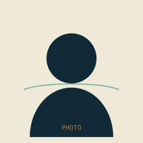

Water Security Research Group · UA Engineering
Tracing water
Tracing water
through the systems
that move it.
The Water Footprint Lab studies how much water stands behind the food, energy, and goods we use — and what that means for water security, ecosystems, and people, from local watersheds to the global scale.
01
Where, and why?
What are the spatial and temporal patterns of the global water footprint, and what drives them?
02
What's the cost?
How do current water-use practices affect the water cycle, and what does that mean for human and ecosystem water security?
03
What's sustainable?
How can growing global water demand be met while minimizing harm to the environment that supplies it?

Loading principal investigator…
What we work on
All projects
Featured projects
Loading projects…
From the lab
All news
Latest news
Loading news…
Who we are
Meet everyone
The team
Loading team…
Selected output
Full list
Recent publications
Loading publications…
We're growing the lab.
Checking current openings…